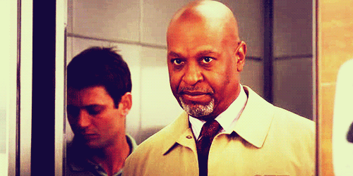
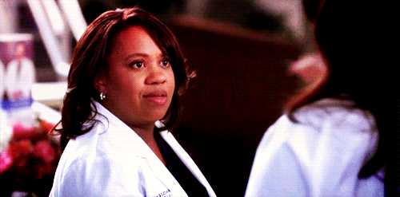

Em outubro de 2014, a usuária Beth, através do blog TV Junkie Confessions, sugeriu que a meia irmã de Meredith nunca existiu. Chegou a essa conclusão baseando-se em cálculos matemáticos que não batem com a idade da personagem. Beth começa sua teoria afirmando que, pelo ano de estreia da série, é possível saber a idade dos médicos. Já que os estudantes de medicina começam sua residência aos 26, é possível dizer que, em 2005, os protagonistas tinham aproximadamente 26 anos. Ou seja, Meredith teria nascido por volta de 1979.
Agora temos Lexie entrando na 3ª temporada, que, de acordo com a linha do tempo de Beth, se passa em 2006, portanto a "Pequena Grey" teria seus 26 anos. Fazendo as contas, de novo, ela teria nascido por volta de 1980. Contraditório, de acordo com a própria série, já que no universo de Grey's, Meredith é cinco anos mais velha que a meia irmã. Portanto, uma vez que Meredith tenha nascido 1979, Lexie teria que ter nascido em 1984, ou seja, cinco anos depois.
As coisas só começam a se complicar a partir daí. Porque, admitindo que Lexie tenha nascido em 1984 e, pulado o terceiro ano do Ensino Médio, ela teria se formado aos 17 anos, ou seja, em 2001. Ela só estaria apta a residir em Seattle Grace aos 26, isto é, em 2010, o que não acontece. Para Beth, isso prova que Lexie não passou de um "recheio" que os roteiristas colocaram para impulsionar a série. Quando ela já não era mais necessária, a mataram.
Grey não existe. Nunca existiu. Nunca existirá. Sendo assim, ninguém deve ou pode ficar triste por sua morte. Isso nunca aconteceu. Fim da história", disse ela.
ANDERSON NARCISO- 22/02/2018
A showrunner da série, Krista Vernoff, revelou ao TVLine que a personagem será "parte muito importante da nossa 'Temporada do Amor'".
"Sim, Meredith Grey é uma mãe solteira e isso complica uma vida amorosa", explicou Vernoff. "E sim, ela é uma maravilha cirúrgica com novas ideias médicas que mudam o jogo que ela vai buscar. Mas ela também não namorou desde que Nathan Riggs saiu [na 13ª temporada]. E o baque de conhecer Nick Marsh [Scott Speedman] despertou nela um desejo que ela não pode voltar atrás".
"A questão nesta temporada", a showrunner acrescenta, "não é 'Meredith Grey irá encontrar o amor novamente?', mas 'com quem ela vai encontrar o amor?'".
Ainda falando sobre o personagem Nick Marsh, que logo se tornou um favorito dos fãs, Vernoff revelou a verdadeira razão pela qual a série não perseguiu um romance entre Nick e Meredith. "Todos nós o amamos, mas Nick foi concebido como um ator convidado de um episódio só", observa a showrunner, "que é a razão pela qual Scott concordou em vir interpretá-lo!".
Vale lembrar que Chris Carmack foi escalado para viver um novo cirurgião ortopedista do Grey Sloan Memorial. Será ele o novo crush de Meredith?
Grey's Anatomy retorna com episódios inéditos nos Estados Unidos em 27 de setembro. No Brasil, a série faz parte da programação do canal Sony.
INDETERMINADO- 09/08/2018
Muitos fãs de “Grey's Anatomy” já estão pensando na 15ª temporada. Contudo, alguns foram um pouco mais longe e tocaram em um assunto delicado: os personagens que poderão deixar a série.
Como as despedidas da última temporada não aconteceram por meio da morte de ninguém, usuários do Reddit preveem que existem um personagem com grande probabilidade de morrer na série. Dessa vez, nos despediríamos de Richard Webber, interpretado por James Pickens Jr., uma espécie de patriarca no hospital presente desde a primeira temporada. 
No passado, Richard estava no centro de algumas histórias: foi revelado que ele teve um caso com a mãe de Meredith Grey (Ellen Pompeo) e sua filha secreta Maggie (Kelly McCreary) entrou para a lista de personagens.
Atualmente, Richard está feliz com sua segunda esposa Catherine Avery (Debbie Allen) e desde então, a série não colocou mais esse personagem envolvido em grandes acontecimentos.Tal inatividade é um dos principais motivos pelos quais alguns fãs de “Grey's Anatomy” acham que Richard está prestes a morrer.
O usuário do Reddit, OnATurningCarousel, escreveu que a teoria sobre a morte de Richard ou de Miranda Bailey (Chandra Wilson) faria sentido, dizendo: “A morte de Bailey afetaria tanto (a série), quanto a de Richard, que não teve histórias particularmente interessantes ultimamente. 
O programa está desacelerando deliberadamente Richard, então sua saída oficial seria algo lógico”.Enquanto um outro usuário aponta que Richard e Bailey são “únicos e importantes” para ter pontos seguros na trama geral, outros telespectadores acreditam firmemente em Richard pode ser morto.
Qualquer pista sobre o assunto não será fácil, já que Pickens é um dos atores mais discretos da série e dificilmente fala sobre seu personagem na mídia. A 15ª Temporada de “Grey's Anatomy” vai estrear no dia 27 de setembro, nos Estados Unidos.
VICTÓRIA BRAVO- 06/08/2018
A pergunta era se finalmente seria revelada a identidade do pai do bebê de Teddy (Kim Raver). O jornalista respondeu com todas as letras que é Owen (Kevin McKidd). Ainda conforme a publicação, a própria Kim Raver contou o spoiler.
“Em caso de ter alguma dúvida, o pai do bebê de Teddy é definitivamente Owen. Como Kim Raver notou, a reviravolta final foi anunciada ainda no 17° episódio da 14ª temporada, que permitiu a ‘audiência entender a relação amorosa que Teddy e Owen tem'”, contou o jornalista.
Ausiello ainda garante que o caso trará complicações na relação de Owen com Amelia (Caterina Scorsone). É esperado que a nova temporada traga muitos momentos dignos de um triângulo amoroso.
A 15ª temporada de Grey’s Anatomy estreia nos EUA em 27 de setembro, com um episódio de 2 horas de duração. No Brasil, o drama médico é exibido no canal Sony.
BRUNO TOMÉ- 07/08/2018
Ellen Pompeo (Meredith Grey) e Patrick Dempsey (Derek Shepherd) não passaram por momentos fáceis no set de “Grey’s Anatomy” e atriz falou abertamente sobre o assunto, demonstrando o quanto a relação de trabalho “pesada” entre os dois tornou sua vida profissional complicada.
Agora, Ellen falou novamente do seu ex-colega em uma entrevista na Universidade de Oxford e explicou porque seu personagem não conseguiu ainda consolidar nenhum relacionamento importante como o que teve com Sheperd.
Ela revelou que quando Dempsey deixou o drama médico, os autores trabalharam duro para encontrar algum tipo de substituto, em outras palavras, um novo interesse amoroso por Meredith, sem perceber que uma liderança feminina era mais que suficiente.
Ela mencionou que, por isso, a entrada de Martin Henderson como Nathan Riggs na vida de Meredith pareceu um pouco “forçada” desde o início. Especialmente pelo triângulo amoroso entre eles e Maggie, irmã de Meredith.
Ellen foi clara quanto ao assunto: “Não tem como substituir Patrick Dempsey. Para mim, é ofensivo pensar em substituí-lo. Ele é extremamente carismático e talentoso, eu tive uma química incrível com ele que nunca acontecerá de novo. Isso é mágico”.
As palavras de Ellen deram alegria aos fãs – que ainda não aceitaram um substituto na vida de Meredith – e demonstraram que mesmo com uma relação complicada, ela reconhece a importância que Dempsey teve na série.
VICTÓRIA BRAVO- 16/07/2018